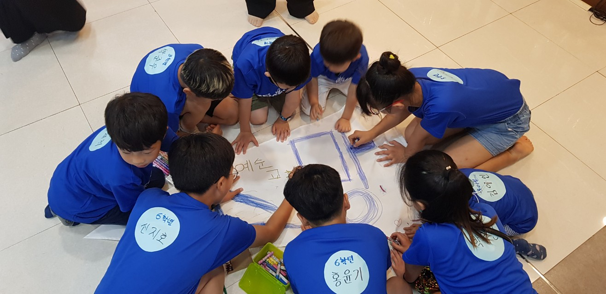

예순교회 주일학교 공과공부!

나른한 주일 아침, 하나님을 더욱 알아가기 위해 이자리에 오신 여러분들을 환영해요!
이곳에서는 코로나19사태로 인해 멈추어진 공과공부를 회복하고, 함께 교제하기 위하여 만들어졌어요.
앞으로 나올 게시판들은, 성경에 나온 인물들의 생애와 이야기들을 보고, 듣고, 알아가며 조금씩 성경에 대해 알아가는 공간이에요.
이 공간은 직접 만들었답니다! 여러분들도 나중에 함께 할 수 있는 기회가 있었으면 좋겠습니다.
오늘 공개된 이 모델은 초기개발버전이라 휑하고 아무것도 없어보이지만,
앞으로 이 공간은 계속 업데이트 되어, 보기좋은 모습으로 여러분들을 찾아갈게요 :)
초기개발모델 배포버전. 2020.06.07 first ver.
made by hosan.K